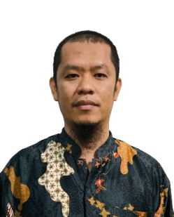

Tommy Poernomo
Professional / Specialist / Educator
I am an aspiring Software Engineer with a multidisciplinary background shaped by education, who values clarity, structured thinking, and continuous learning while building functional, high-impact web solutions.
At SMK Negeri 1 Berau (Vocational High School Negeri 1 Berau), I have spent more than 10 years building structured analysis and problem-solving skills through organizing learning activities in collaboration with the school leadership. I managed the DKV teacher team and collaborated with the Vice Principal for Curriculum to design shared lesson plans, ensuring structured execution and alignment across stakeholders.
Through this transition, I sharpen software engineering skills in HTML, CSS, JavaScript, React, and Nest JS while strengthening adaptability and structured communication to respond effectively to fast-changing technologies. My uncommon mix of domain knowledge and educator-driven work mindset, combined with a commitment to writing clean, maintainable code, positions me to contribute immediately as a Software Engineer.Ringkasan Profesional
Memiliki rekam jejak yang kuat dalam penyusunan strategi teknis, manajemen alur kerja digital, dan pengajaran berbasis kompetensi. Terbiasa menangani proyek kolaboratif, pengujian standar kualitas, serta penerapan teknologi modern untuk efisiensi operasional.
Pengalaman Kerja
Senior Specialist / Educator
Instansi / Perusahaan Utama
2021 - Sekarang · Full-time
Memimpin pelaksanaan asesmen kompetensi, pengembangan kurikulum teknis, serta pengelolaan infrastruktur digital untuk optimalisasi proses belajar dan penilaian.
Web Developer / Technical Assessor
Lembaga Sertifikasi / Project Team
2018 - 2021
Mengembangkan aplikasi sistem informasi web interaktif serta bertindak sebagai penguji independen dalam uji kompetensi teknis nasional.
Pendidikan & Pelatihan
Sarjana / Diploma Terkait
Universitas / Perguruan Tinggi
Sertifikasi Competency Assessor & Fullstack Web Development
LSP / RevoU / Lembaga Pelatihan Terakreditasi